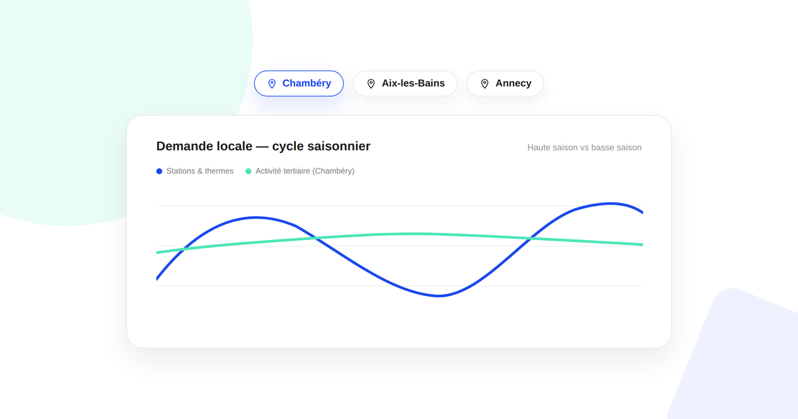
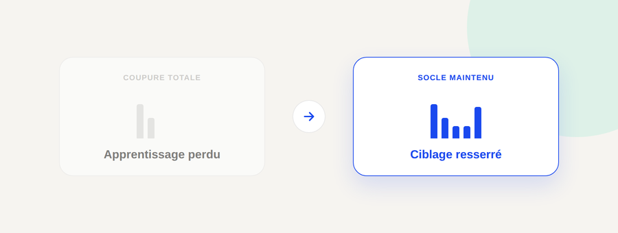

SEO local saisonnier en Savoie : structurer ses pages et son budget Ads entre haute et basse saison
Chambéry, Aix-les-Bains, les stations de ski et les bords du lac du Bourget n'ont pas le même rythme de demande locale toute l'année. Un site qui traite sa visibilité locale comme un réglage figé perd du terrain à chaque bascule de saison. Voici comment structurer ses pages et piloter son budget sans repartir de zéro à chaque changement de saison.

La Savoie a une particularité que peu de guides SEO génériques traitent correctement : une partie significative de son économie locale est saisonnière. Les stations de ski vivent l'hiver, les thermes et le lac du Bourget animent l'été, et des villes comme Chambéry gardent une activité économique stable toute l'année grâce au tertiaire et à l'événementiel. Appliquer une stratégie SEO local unique et figée à ce territoire revient à ignorer une bonne partie du signal de demande réelle.
Le piège du site qui traite toute la Savoie comme une seule zone homogène
Constat : beaucoup de sites savoyards créent une page « zone d'intervention » unique qui liste dix communes sans jamais entrer dans le détail de ce qui différencie leur demande. Résultat : la page ne répond précisément à aucune des requêtes locales qu'elle vise, et Google a du mal à la positionner sur une ville en particulier. À faire : séparer les bassins de chalandise qui ont des dynamiques réellement différentes — une ville thermale et touristique comme Aix-les-Bains n'a pas le même profil de recherche qu'une préfecture à économie tertiaire comme Chambéry — et leur dédier chacune une page avec un contenu propre, pas un gabarit où seul le nom change.
Caler le contenu des pages locales sur le bon cycle, pas sur un calendrier arbitraire
Constat : une page ville écrite une fois et jamais retouchée perd en pertinence au fil des saisons, alors que la demande locale, elle, continue de bouger. À faire : pour une activité réellement dépendante de la saisonnalité touristique (hébergement, activités de plein air, bien-être), prévoir une revue de contenu au moins deux fois par an — avant chaque haute saison — plutôt que de laisser la page figée. Pour une activité à demande stable comme le conseil ou les services B2B, ce rythme n'est pas nécessaire : la priorité reste la fraîcheur générale du site, pas un calendrier saisonnier.
Piloter le budget Ads local sans tout couper ni tout garder identique
Constat : face à la baisse de demande en basse saison, deux réflexes reviennent souvent — couper le budget à zéro, ou le laisser identique en espérant que ça compense. Les deux posent problème : couper à zéro fait perdre l'historique d'apprentissage des campagnes (Google Ads et Meta Ads ont besoin de volume de conversions régulier pour maintenir leurs algorithmes d'enchère calibrés), et un budget inchangé en basse saison gaspille du budget sur une demande qui n'est plus là. À faire : réduire le budget en basse saison sans l'annuler, et resserrer le ciblage géographique et les mots-clés sur le cœur de cible qui reste actif toute l'année, plutôt que de suspendre les campagnes dans leur ensemble.

Ne pas confondre SEO local saisonnier et optimisation de fiche Google Business Profile
Constat : ce sont deux leviers distincts, souvent mélangés. La fiche Google Business Profile (avis, photos, horaires, posts) agit sur la visibilité immédiate dans le pack local et sur Maps. La structure des pages locales du site, elle, agit sur le référencement naturel de fond — ce qui permet au site d'être trouvé sur des recherches plus larges que le simple « près de moi ». À faire : traiter les deux en parallèle plutôt que de concentrer tous les efforts sur l'un en négligeant l'autre — une fiche optimisée ne compense pas des pages locales mal structurées, et inversement.
FAQ
Faut-il une page par ville ou une seule page régionale pour la Savoie ?
Une page par ville ou bassin de chalandise, à condition que chacune ait un contenu réellement différent (contexte local, offre, zone desservie). Une seule page qui tente de couvrir toute la région finit par ne cibler précisément aucune requête locale.
Comment éviter le duplicate content entre plusieurs pages ville en Savoie ?
En ne dupliquant jamais le corps de texte d'une page à l'autre : chaque page doit citer des repères propres à sa ville (lieux, spécificités économiques, distance aux villes voisines) plutôt qu'un gabarit générique où l'on change juste le nom de la ville.
Faut-il couper son budget Google Ads en basse saison touristique ?
Rarement en totalité : couper à zéro fait perdre l'historique d'apprentissage des campagnes et oblige à repartir de rien à la réouverture de la saison. Mieux vaut réduire le budget et resserrer le ciblage plutôt que suspendre complètement les campagnes.
Votre présence locale en Savoie mérite mieux qu'une page générique par ville ?
Pour aller plus loin, voir la page SEO, la page GEO, et la page Consultant marketing à Chambéry.
À lire aussi : Cocons sémantiques : la méthode SEO expliquée et Audit GEO : votre visibilité dans les réponses IA.
Pour continuer sur ce sujet.